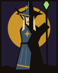
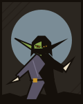
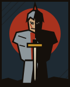

URGENT / ADMINISTRATIVE01
♜
FILE THE DRAGON'S
TAX RETURN.
The entire hoard is a “home office.” The inspector is a smaller, angrier dragon.
REQUIRES: INTELLIGENCEGOOD LUCK ↗
A POCKET-SIZED FANTASY ROGUELIKE
The world needs a hero.
Unfortunately, it got you.
Take absurd jobs. Roll terrible dice. Annoy your Dungeon Master.
Become a legend in the time it takes to miss your bus.
COMING TO iOS + ANDROID • 2–10 MINUTE RUNS

THE BRAINS. ALLEGEDLY.
CHECK YOUR POCKETS.
YOU. PROBABLY.01 / A HEROICALLY BAD PLAN
Not every quest involves slaying a dragon. Sometimes you're filing its tax return. Sometimes the soup needs rescuing. Sometimes the real treasure is surviving your own decisions.
Side Quest Simulator packs an entire fantasy disaster into a few minutes. Build a deeply flawed hero, chase Hero of the Year, and face a rival who probably has their life together.
02 / CHOOSE YOUR LIABILITY
Great potential.
Very little supervision.
HIT FIRST. THINK EVENTUALLY.
Solves problems by hitting them. Has not yet met a problem that minded.
Heal 2 HP whenever you finish a quest.
Add an ancestry. Add a regrettable quirk.
Congratulations. You're somebody else's problem now.
03 / HONEST WORK. MOSTLY.
The entire hoard is a “home office.” The inspector is a smaller, angrier dragon.
The chef has a ladle. The soup has feelings. You have a very questionable plan.
He claims he has tenant rights. And never dies. This may take a minute.
04 / A TASTE OF YOUR OWN MISFORTUNE
One choice. One d20. A worrying amount of soup.
Try a tiny encounter from the world of Side Quest.
The chef raises his ladle. The soup politely asks you to hurry. How do you save your new friend?
An interactive preview. The full game has considerably more problems.YOUR LEGEND IS PENDING.
Side Quest Simulator is coming to iOS and Android.
Until then, keep your sword sharp and your expectations flexible.